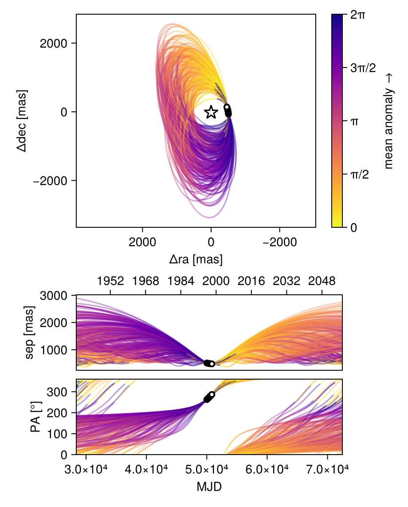
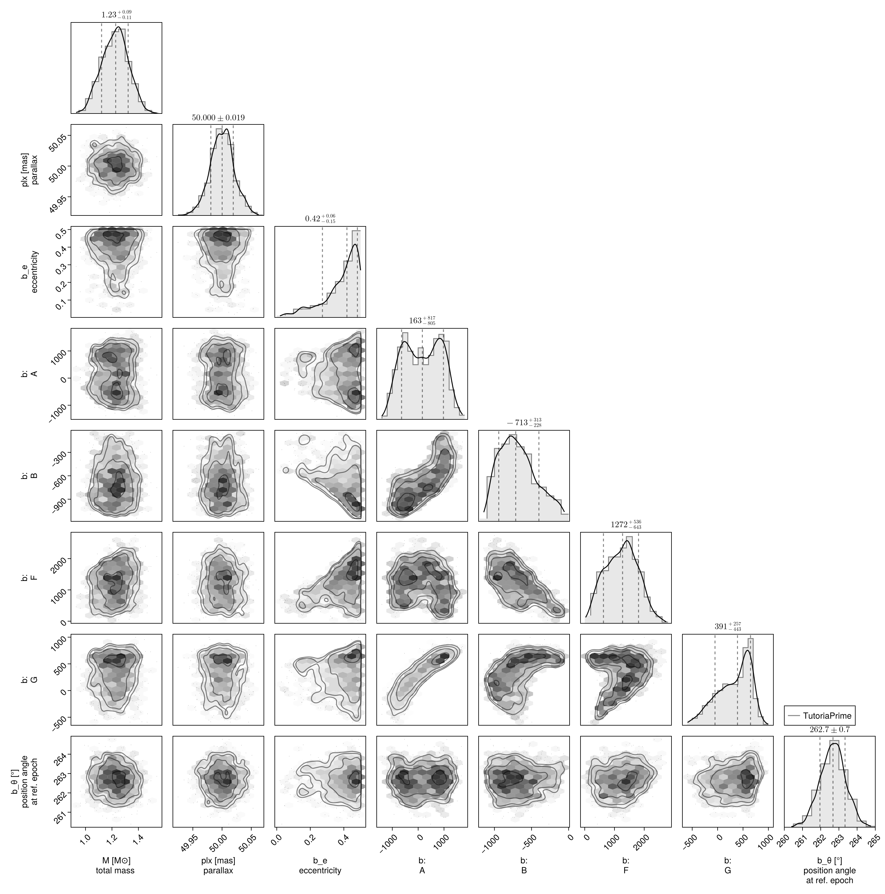
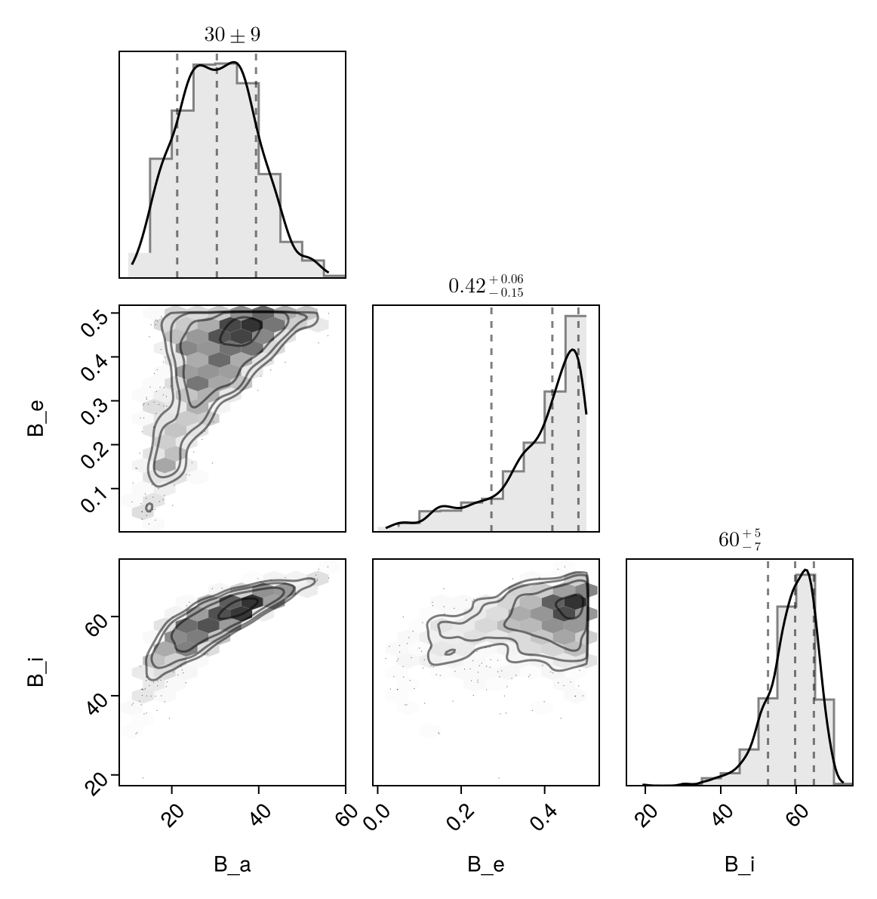

Fit with a Thiele-Innes Basis
This example shows how to fit relative astrometry using a Thiele-Innes orbital basis instead of the traditional Campbell basis used in other tutorials. The Thiele-Innes basis is more suitable then Campbell for fitting low-eccentricity orbits, because it does not have the issues where ω, Ω, and tp become degenerate as eccentricity and/or inclination fall to zero.
At the end, we will convert our results back into the Campbell basis to compare.
using Octofitter
using CairoMakie
using PairPlots
using Distributions
astrom_like = PlanetRelAstromLikelihood(
(epoch = 50000, ra = -505.7637580573554, dec = -66.92982418533026, σ_ra = 10, σ_dec = 10, cor=0),
(epoch = 50120, ra = -502.570356287689, dec = -37.47217527025044, σ_ra = 10, σ_dec = 10, cor=0),
(epoch = 50240, ra = -498.2089148883798, dec = -7.927548139010479, σ_ra = 10, σ_dec = 10, cor=0),
(epoch = 50360, ra = -492.67768482682357, dec = 21.63557115669823, σ_ra = 10, σ_dec = 10, cor=0),
(epoch = 50480, ra = -485.9770335870402, dec = 51.147204404903704, σ_ra = 10, σ_dec = 10, cor=0),
(epoch = 50600, ra = -478.1095526888573, dec = 80.53589069730698, σ_ra = 10, σ_dec = 10, cor=0),
(epoch = 50720, ra = -469.0801731788123, dec = 109.72870493064629, σ_ra = 10, σ_dec = 10, cor=0),
(epoch = 50840, ra = -458.89628893460525, dec = 138.65128697876773, σ_ra = 10, σ_dec = 10, cor=0),
)
@planet b ThieleInnesOrbit begin
e ~ Uniform(0.0, 0.5)
A ~ Normal(0, 10000) # milliarcseconds
B ~ Normal(0, 10000) # milliarcseconds
F ~ Normal(0, 10000) # milliarcseconds
G ~ Normal(0, 10000) # milliarcseconds
θ ~ UniformCircular()
tp = θ_at_epoch_to_tperi(system,b,50000.0) # reference epoch for θ. Choose an MJD date near your data.
end astrom_like
@system TutoriaPrime begin
M ~ truncated(Normal(1.2, 0.1), lower=0)
plx ~ truncated(Normal(50.0, 0.02), lower=0)
end b
model = Octofitter.LogDensityModel(TutoriaPrime)LogDensityModel for System TutoriaPrime of dimension 9 with fields .ℓπcallback and .∇ℓπcallback
We now sample from the model as usual:
using Random
Random.seed!(0)
results = octofit(model)Chains MCMC chain (1000×24×1 Array{Float64, 3}):
Iterations = 1:1:1000
Number of chains = 1
Samples per chain = 1000
Wall duration = 4.19 seconds
Compute duration = 4.19 seconds
parameters = M, plx, b_e, b_A, b_B, b_F, b_G, b_θy, b_θx, b_θ, b_tp
internals = n_steps, is_accept, acceptance_rate, hamiltonian_energy, hamiltonian_energy_error, max_hamiltonian_energy_error, tree_depth, numerical_error, step_size, nom_step_size, is_adapt, loglike, logpost, tree_depth, numerical_error
Summary Statistics
parameters mean std mcse ess_bulk ess_tail ⋯
Symbol Float64 Float64 Float64 Float64 Float64 Flo ⋯
M 1.2239 0.0989 0.0045 484.7955 478.1865 1. ⋯
plx 50.0002 0.0204 0.0007 975.7513 526.5492 1. ⋯
b_e 0.3839 0.1077 0.0057 349.0580 340.0465 1. ⋯
b_A 167.7187 715.9976 58.7689 156.2858 414.8548 1. ⋯
b_B -678.0812 250.4635 17.6760 214.0601 240.5177 1. ⋯
b_F 1238.4259 541.7620 37.4878 204.7971 247.0269 1. ⋯
b_G 319.9804 330.5705 28.0008 148.2785 182.7423 0. ⋯
b_θy -0.1278 0.0173 0.0008 510.5774 440.8074 1. ⋯
b_θx -0.9931 0.0991 0.0040 619.6479 699.8792 1. ⋯
b_θ -1.6988 0.0122 0.0005 618.4632 654.2932 1. ⋯
b_tp 15983.4549 32568.5425 2214.3257 267.7764 547.7811 1. ⋯
2 columns omitted
Quantiles
parameters 2.5% 25.0% 50.0% 75.0% 97.5 ⋯
Symbol Float64 Float64 Float64 Float64 Float6 ⋯
M 1.0354 1.1523 1.2281 1.2918 1.409 ⋯
plx 49.9578 49.9868 50.0002 50.0132 50.040 ⋯
b_e 0.1117 0.3356 0.4185 0.4664 0.497 ⋯
b_A -1041.5449 -472.4744 162.5333 798.3946 1367.221 ⋯
b_B -1061.3893 -869.3993 -713.4277 -520.5194 -131.417 ⋯
b_F 264.5420 825.4964 1272.4645 1625.9694 2264.509 ⋯
b_G -384.0623 76.5771 391.1407 595.0798 778.780 ⋯
b_θy -0.1659 -0.1385 -0.1273 -0.1159 -0.097 ⋯
b_θx -1.2070 -1.0564 -0.9799 -0.9230 -0.823 ⋯
b_θ -1.7223 -1.7067 -1.6986 -1.6910 -1.675 ⋯
b_tp -49361.6911 -10235.4613 18795.4971 48586.5412 49786.080 ⋯
1 column omitted
Notice that the fit was very very fast! The Thiele-Innes orbital paramterization is easier to explore than the default Campbell in many cases.
We now display the results:
octoplot(model,results)
octocorner(model, results, small=false)
Conversion back to Campbell Elements
To convert our chain into the more familiar Campbell parameterization, we have to do a few steps. We start by turning the chain table into a an array of orbit objects, and then convert their type:
orbits_ti = Octofitter.construct_elements(results, :b, :) # colon means all rows1000-element Vector{ThieleInnesOrbit{Float64}}:
ThieleInnesOrbit{Float64}(0.4501417148924991, -26681.514274023968, 1.3020794693387645, 49.99126741160192, -41.974470254748674, -911.7930475984729, 1872.594884903255, 395.2763944420702, -34.04281482088758, -5.160147154364802, 76854.20742570076, 0.02986086917448187, 1.6239768581518048)
ThieleInnesOrbit{Float64}(0.30936632383137896, 7547.670024604449, 1.1716142401812872, 50.00789099786531, 733.3880667542044, -496.01489284444074, 1069.4258887498684, 485.47950510822136, -19.15364637727961, 11.346719058440419, 44951.11188838432, 0.051053985920209696, 1.376913657921642)
ThieleInnesOrbit{Float64}(0.3538296737587275, 4400.47785685947, 1.2786999887573063, 50.00032154772717, 1231.2448138970296, -66.29996812403975, 674.7451540549145, 731.2844699913668, -14.977960185076936, 20.89155701417394, 50060.202063251294, 0.04584347123784449, 1.4474664602408043)
ThieleInnesOrbit{Float64}(0.46610511123132264, -18505.12962476148, 1.2065883275827063, 50.009295171834005, 646.5389246804161, -827.9866385140283, 1649.944799281876, 359.17178183984345, -28.547564748487556, 10.776094306866327, 70164.99816525514, 0.03270766754731802, 1.6571227221742948)
ThieleInnesOrbit{Float64}(0.4379731806451785, -8466.959295432294, 1.1968252020478116, 50.00496734608768, 753.4615051258448, -677.7878694720633, 1402.959722642861, 518.713412634339, -24.773308912355485, 11.38900468425689, 60458.7601929564, 0.03795865853224542, 1.5995465115849057)
ThieleInnesOrbit{Float64}(0.370397240710143, -16346.877072722069, 1.0980507411465976, 49.99987018649583, 134.2553510887466, -753.0932968575761, 1616.5160452972282, 395.32652704783845, -29.578515593239693, -1.0912278154130997, 66984.44427913117, 0.03426069228676611, 1.4753325572290614)
ThieleInnesOrbit{Float64}(0.23026956891351075, 49387.648838788045, 1.0562778483835187, 50.00800638836783, -263.4953999154098, -659.997551459477, 1005.8875570593826, 9.37092327600446, -15.804359722828956, -6.862528890766274, 34822.82740473585, 0.0659031332170126, 1.2642437420174355)
ThieleInnesOrbit{Float64}(0.4216253737628916, 49180.88790979913, 1.2979789409063585, 49.992632891722685, -501.89743728479255, -907.4413858018961, 1283.2450774888448, 16.153407034898073, -20.041556754326994, -13.15087146260079, 49662.67867654472, 0.04621042389586655, 1.5677902787877969)
ThieleInnesOrbit{Float64}(0.4681449250918499, 49481.06501013449, 1.123722341411327, 49.994889213917666, -398.8867632611588, -980.4810868839759, 1226.104957006081, 42.64679117394577, -17.403063656578272, -12.20474665608697, 49437.840687614735, 0.04642058393991053, 1.6614520438603044)
ThieleInnesOrbit{Float64}(0.17298438289580031, 21816.14546815756, 1.3581445990910688, 49.99400537983964, 560.537892785897, -413.67125637682886, 876.4387518127925, 441.77694384124834, -15.867043899322994, 7.779664642802337, 30414.659526042546, 0.07545484543341041, 1.1909382929796133)
⋮
ThieleInnesOrbit{Float64}(0.224548678774272, 26591.34076988189, 1.0962723651934196, 49.99927609255707, 90.79784605063837, -616.7638509820947, 785.9116722083394, 251.29522021371938, -11.214612277517057, -2.983006111986292, 23957.087879448263, 0.09579350566293439, 1.2566396449778803)
ThieleInnesOrbit{Float64}(0.16827471071329034, 24938.177988711195, 1.210420652244963, 50.00496592950764, 60.79402884523108, -583.6819223368587, 864.8909886695643, 233.93088724437212, -13.757625435229853, -2.440663829565239, 25529.257826439156, 0.08989424796637119, 1.1851751434604048)
ThieleInnesOrbit{Float64}(0.23311602630488582, 47906.130125613025, 1.2571200439834893, 50.00325097631726, -680.8581364400984, -648.7030899628555, 855.884413519168, -174.0291646037336, -12.851836686993565, -14.621459313143186, 35416.7279379124, 0.06479800837249834, 1.2680522239631844)
ThieleInnesOrbit{Float64}(0.22161652640513288, 47810.869116116955, 1.265766868383512, 49.98906939321825, -689.6127841330979, -647.9620866299839, 897.3605485606452, -159.88995065943354, -13.916204137269252, -14.81593743510218, 36971.52858424431, 0.06207299295775795, 1.2527679853551894)
ThieleInnesOrbit{Float64}(0.3620040286505322, 49037.556290707595, 1.1318138839916543, 50.01368319408086, -437.34288695355224, -667.0114959013515, 452.8069658880541, -347.0265075642577, 1.1926423977866178, -11.208882005813937, 21957.138654864968, 0.10451878405107504, 1.4611009660656775)
ThieleInnesOrbit{Float64}(0.443057086746987, 48771.01466065807, 1.060552109621764, 50.00556016812939, -647.8818349535763, -857.7753200665258, 830.7039606707826, -247.76998011628987, -8.512818136556376, -15.29902829659178, 39431.21388532824, 0.05820093289852418, 1.6096683871570292)
ThieleInnesOrbit{Float64}(0.43428626845863083, 48705.87174192228, 1.046590972915373, 49.97430532921074, -642.650124516981, -855.788944474415, 797.5274503229573, -234.08364219500567, -7.976489619579841, -15.672360384720356, 39004.594854531955, 0.05883751496474511, 1.5922804396789736)
ThieleInnesOrbit{Float64}(0.4882485866483755, -37455.42037513504, 1.3128175846070953, 49.99628946280509, 1324.5691605489494, -475.6340055831047, 1664.7757859228707, 840.5412983987494, -32.884222219094745, 21.962977951214164, 90789.1950526958, 0.02527760524933964, 1.7053291432697102)
ThieleInnesOrbit{Float64}(0.4829144546146177, -33703.63186362486, 1.315352134738102, 50.02982827641074, 1336.1902112728721, -467.5692243596687, 1588.9213445237885, 825.2438214097399, -31.216272209013386, 22.234193977337704, 87095.63635912973, 0.026349579948924496, 1.6934674378060415)Here is one of those entries:
display(orbits_ti[1])We can now make a table of results (and visualize them in a corner plot) by querying properties of these objects:
table = (;
B_a = semimajoraxis.(orbits_ti),
B_e = eccentricity.(orbits_ti),
B_i = rad2deg.(inclination.(orbits_ti)),
)
pairplot(table)
We can also convert the orbit objects into Campbell parameters:
orbits_campbell = Visual{KepOrbit}.(orbits_ti)
orbits_campbell[1]KepOrbit{Float64}
─────────────────────────
a [au ] = 38.6
e = 0.45014171
i [° ] = 63.0
ω [° ] = 261.0
Ω [° ] = 15.9
tp [day] = -26700.0
M [M⊙ ] = 1.3
period [yrs ] : 210.4
mean motion [°/yr] : 1.71
──────────────────────────
plx [mas] = 50.0
distance [pc ] : 20.0
──────────────────────────